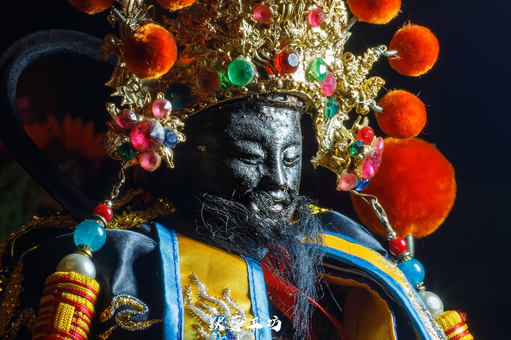
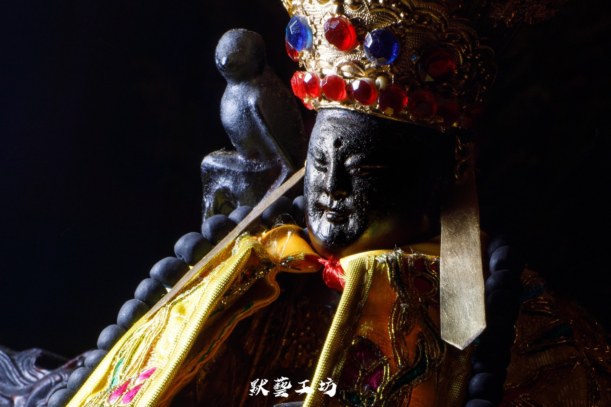
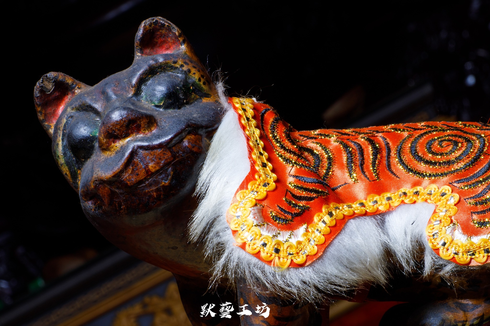

Deities
神明介紹
主祀神明

玄天六上帝
主祀神明
玄天上帝為道教重要護法神，象徵正氣、鎮煞與守護，廣受民間信奉。六興堂以「六上帝」為特色，代表神威分靈、護佑四方。
玄天上帝，又稱「真武大帝」、「北極玄天上帝」、「上帝公」，是道教與民間信仰中極具地位的重要神祇之一。祂主掌北方、水界與降妖伏魔，被視為正義與威嚴的象徵。
玄天上帝象徵北極星，在道教體系中屬於統御北方的重要尊神，亦被尊稱為「黑帝」。
康趙二元帥
主祀神明
康趙元帥為道教與民間信仰中的護法神，常作為玄天上帝（帝爺公）的部將，亦是道教「三十六天將」成員。康元帥（康席、康妙威）多為紅面，被封為「仁聖元帥」；趙元帥（趙公明）多為黑面，稱「金輪執法趙元帥」。兩人多站立於帝爺公神龕兩旁，負責守護廟宇、驅除妖孽。
康趙元帥詳細介紹： 身份與職責 康元帥（康席/康真君/仁聖康元帥）： 相傳為西安黑松林之精怪，後歸順玄天上帝，職掌四方都社令，為東嶽十太保之一。其形象多為紅臉，手持金斧，慈惠降妖。 趙元帥（趙公明/趙玄壇/金輪如意執法趙元帥）： 為黑煞神轉世，手持鐵鞭，精通收妖驅雷，亦是著名的財神（武財神）。其職責為直殿大將軍、巡察五方、除瘟禳災。 與玄天上帝的關係 康、趙元帥是玄天上帝駕前最常見的兩大護法站將（有時亦會加上馬、溫元帥），負責執行巡邏、收妖等任務。
配祀神明
觀音佛祖
配祀神明
觀音佛祖即 觀世音菩薩，為佛教中大慈大悲的象徵，亦是臺灣民間信仰中極受尊崇的「觀音媽」、「佛祖媽」。相傳為過去佛「正法明如來」倒駕慈航，因慈悲應化、尋聲救苦，廣度眾生，故於民間香火鼎盛、信仰深遠。 觀音佛祖形象多變，隨緣化現，如送子觀音、魚籃觀音等，皆展現其普渡眾生、隨願應化之慈悲願力。每逢農曆二月十九（聖誕）、六月十九（得道）、九月十九（出家），為重要紀念之日，信眾多前往參香禮拜，祈求平安順遂。

觀音二佛祖
配祀神明
觀音佛祖即 觀世音菩薩，為佛教中大慈大悲的象徵，亦是臺灣民間信仰中極受尊崇的「觀音媽」、「佛祖媽」。相傳為過去佛「正法明如來」倒駕慈航，因慈悲應化、尋聲救苦，廣度眾生，故於民間香火鼎盛、信仰深遠。 觀音佛祖形象多變，隨緣化現，如送子觀音、魚籃觀音等，皆展現其普渡眾生、隨願應化之慈悲願力。每逢農曆二月十九（聖誕）、六月十九（得道）、九月十九（出家），為重要紀念之日，信眾多前往參香禮拜，祈求平安順遂。

黑虎大將軍
配祀神明
黑虎大將軍"介紹..."
軍師伍關大帝
配祀神明
軍師伍關大帝"介紹..."